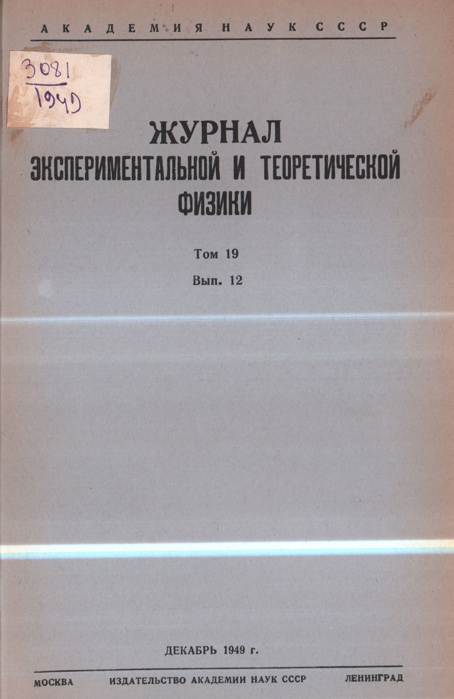
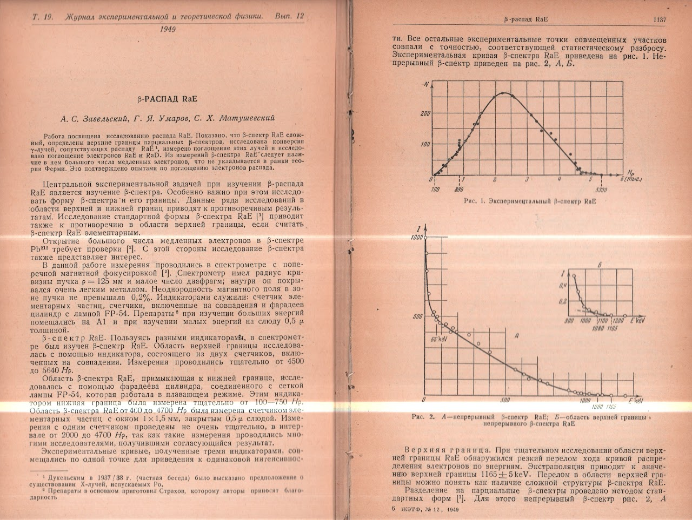
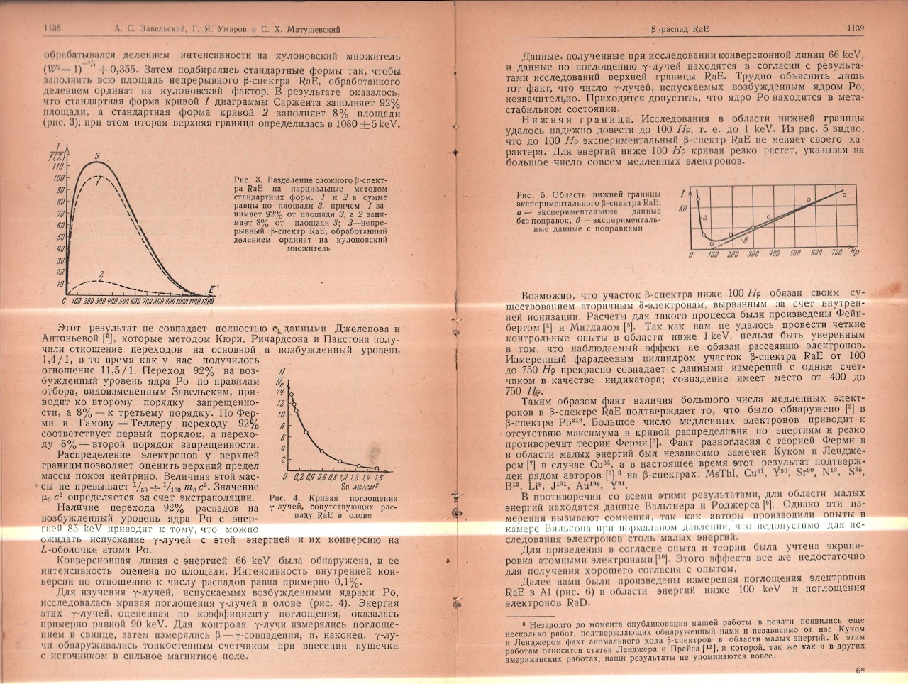
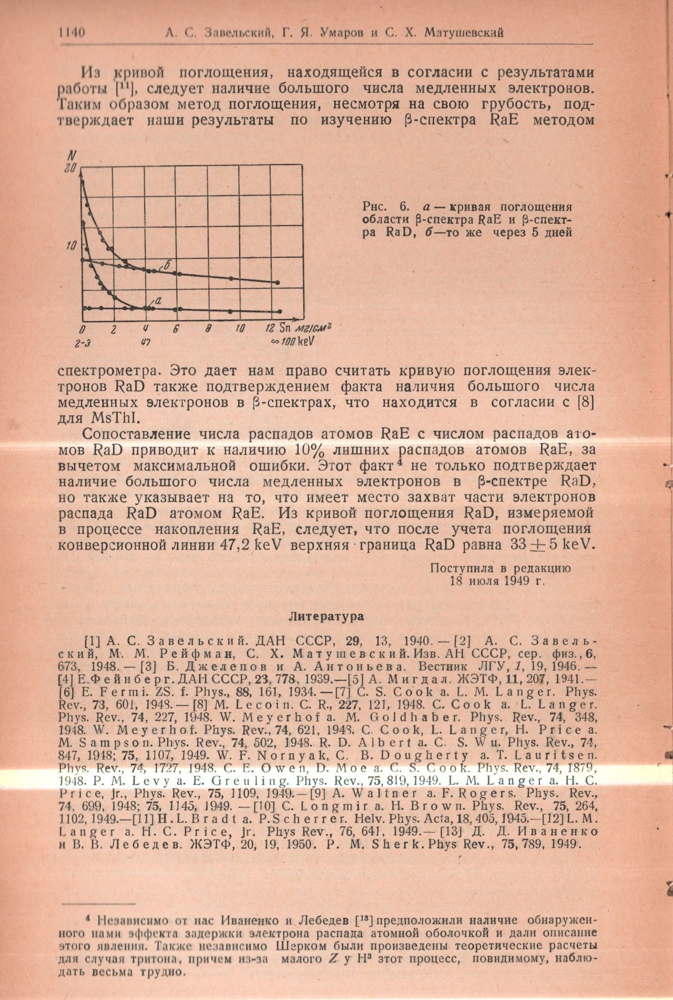

Die Arbeit
Im Dezember 1949 veröffentlichte das Journal of Experimental and Theoretical Physics (JETP) eine vierseitige Arbeit, die unser Verständnis eines der schwer fassbaren Teilchen der Natur stillschweigend neu gestalten sollte. Unter dem Titel “β-raspad RaE” (β-Zerfall von RaE) präsentierte der Artikel von A.S. Sawelski, G.Ja. Umarow und S.Ch. Matuschewski akribische experimentelle Messungen des Beta-Spektrums von Radium E (Bismut-210) — und in seinen Daten verbarg sich eine Schlussfolgerung zur Neutrinomasse, die ihrer Zeit um Jahrzehnte voraus war.
Die Arbeit wurde am 18. Juli 1949 bei der Redaktion eingereicht — nur wenige Monate vor Umarows berühmter Dissertationsverteidigung an der Moskauer Staatsuniversität, bei der er Lew Landau selbst über genau dieselbe Frage debattieren sollte.
Originalscans des Artikels
Die folgenden Scans des Originalartikels wurden freundlicherweise von der Nationalbibliothek Georgiens zur Verfügung gestellt.




Was die Arbeit bewies
Das Experiment verwendete ein Beta-Spektrometer mit transversaler magnetischer Fokussierung (Krümmungsradius ρ = 125 mm). Die Forscher maßen das vollständige β-Spektrum von RaE (Bismut-210) mit mehreren unabhängigen Detektoren: einem Elementarteilchenzähler, Koinzidenzzählern und einem Faraday-Zylinder mit einer FP-54-Lampe.
Ihre wichtigsten Ergebnisse waren:
- Komplexes Spektrum: Das β-Spektrum von RaE ist nicht elementar, sondern komplex und setzt sich aus mindestens zwei Teilspektren zusammen. Die Standard-Sargent-Diagramm-Kurve 1 macht 92 % und Kurve 2 macht 8 % aus, mit einer zweiten oberen Grenze bei 1080 ± 5 keV.
- Obere Grenze: Die primäre obere Grenze wurde durch Extrapolation auf 1165 ± 5 keV bestimmt.
- Langsame Elektronen: Eine große Anzahl langsamer Elektronen wurde im β-Spektrum entdeckt, was der Fermi-Theorie widersprach und eine neue theoretische Interpretation erforderte.
- Neutrinomasse: Aus der Elektronenenergieverteilung nahe der oberen Grenze leiteten die Autoren eine Obergrenze für die Ruhmasse des Neutrinos ab: nicht mehr als 1/50 bis 1/100 der Elektronenmasse (m0c²).
Warum dies wichtig war
Im Jahr 1949 besagte der vorherrschende wissenschaftliche Konsens, dass die Neutrinomasse ungefähr 0,3 bis 0,8 Elektronenmassen betrage. Die Schätzung von Umarow und seinen Koautoren von 1/50 bis 1/100 der Elektronenmasse war radikal — sie implizierte, dass das Neutrino weit leichter war, als irgendjemand glaubte.
Diese Schätzung wurde zum Mittelpunkt von Umarows Dissertationsverteidigung an der Moskauer Staatsuniversität, bei der Lew Landau — der größte sowjetische theoretische Physiker — seine Schlussfolgerung in Frage stellte. Die Debatte war heftig, doch der MSU-Rat stimmte einstimmig (43–0) zugunsten Umarows.
“Der Dissertant blieb bei seiner Meinung, und der Opponent bei der seinen.”
— Lew Landau, offizielles Gutachten zu Umarows Dissertationsverteidigung, 1949
Bestätigung
Die Geschichte gab Umarow recht. Die moderne Teilchenphysik hat festgestellt, dass Neutrinomassen außerordentlich klein sind — in der Größenordnung von Bruchteilen eines Elektronenvolts, ungefähr ein Millionstel der Elektronenmasse. Umarows Obergrenze von 1949 von 1/50 bis 1/100 lag der Realität weit näher als der 0,3–0,8-Konsens seiner Zeit.
Im Jahr 1956 gelang den amerikanischen Physikern Clyde Cowan und Frederick Reines der erste direkte Nachweis des Neutrinos. Reines wurde 1995 für diese Entdeckung mit dem Nobelpreis für Physik ausgezeichnet — die Bestätigung der Existenz des Teilchens, dessen Masse Umarow sieben Jahre zuvor so genau eingegrenzt hatte.
Im Jahr 1981 veröffentlichten der legendäre Astrophysiker Ja.B. Seldowitsch und M.Ju. Chlopow eine bahnbrechende Arbeit über kosmologische Grenzen der Neutrinomasse in den Uspekhi Fizicheskikh Nauk. Ihre Übersichtsarbeit zitierte Umarows frühe Forschung neben Arbeiten von 13 Nobelpreisträgern — ein Zeugnis für die bleibende Bedeutung jenes Experiments von 1949 in einem Leningrader Labor.
Zitation
“β-raspad RaE” (β-Zerfall von RaE). Zhurnal Eksperimental'noi i Teoreticheskoi Fiziki, Bd. 19, Heft 12, S. 1136–1140. Dezember 1949. Eingegangen am 18. Juli 1949.